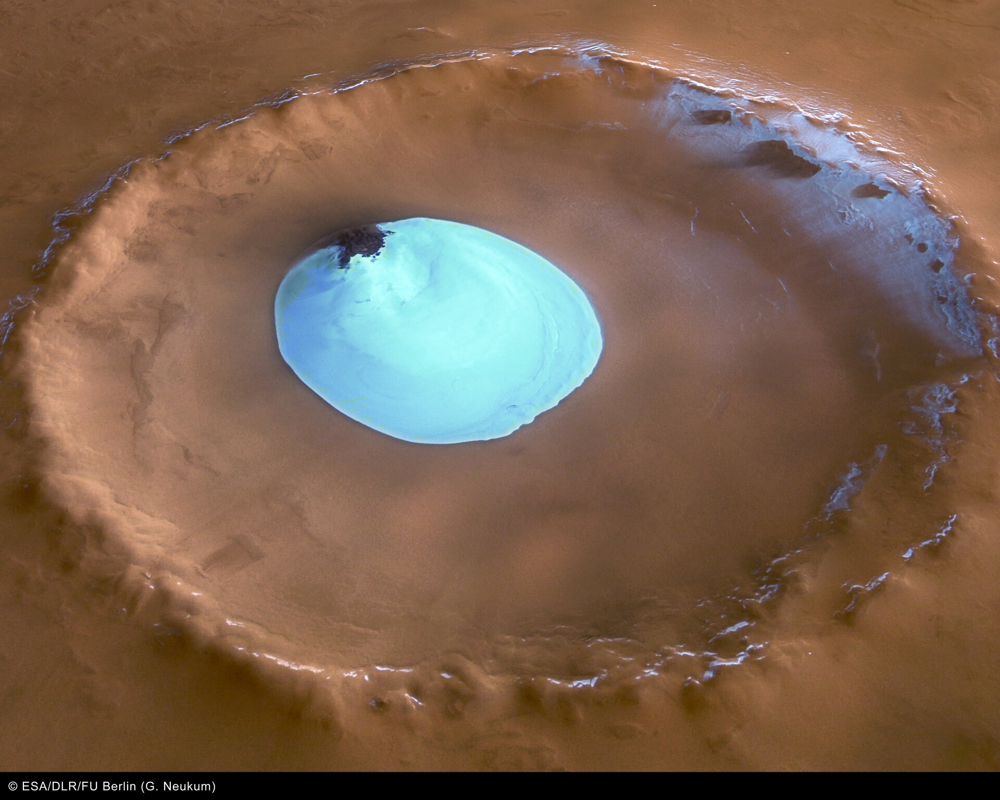
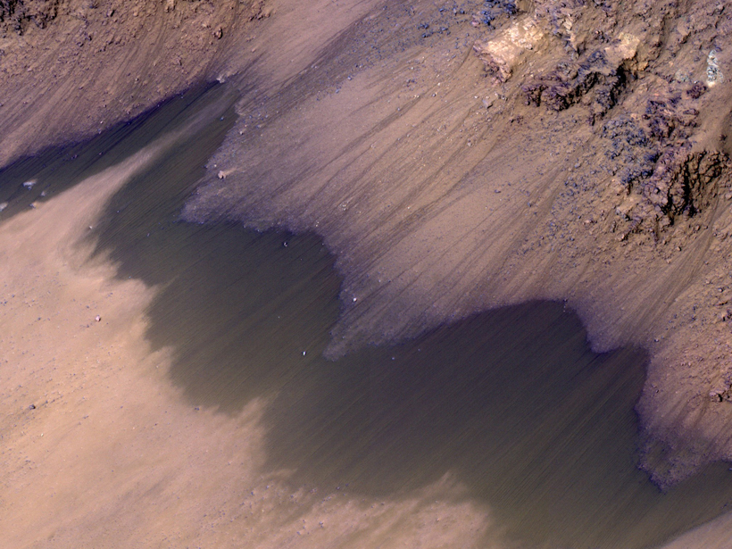
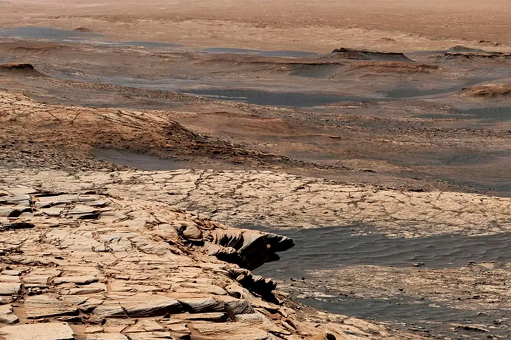
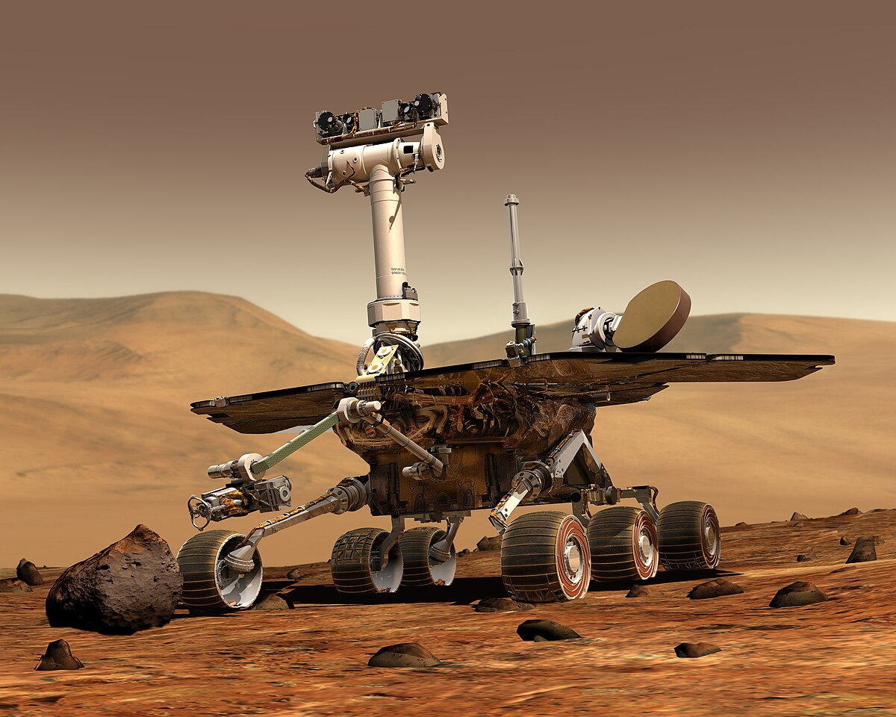
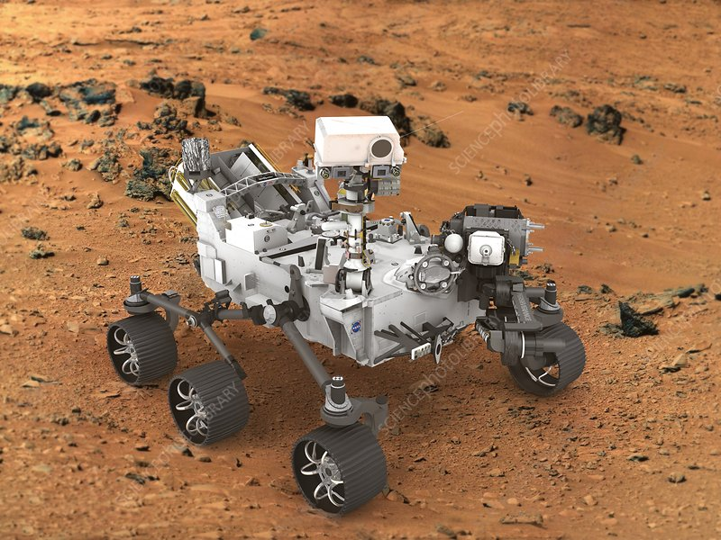
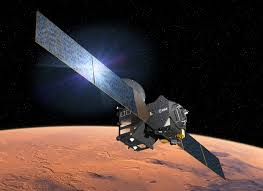
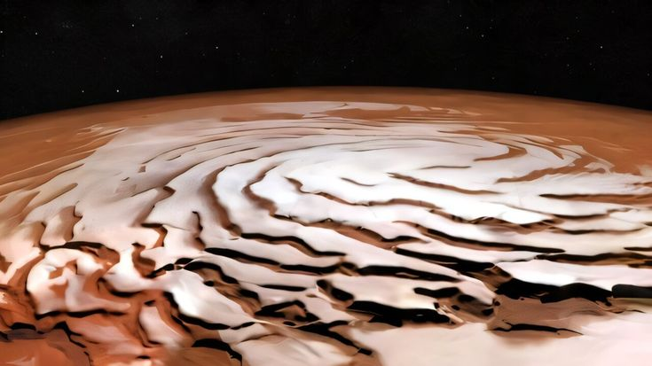
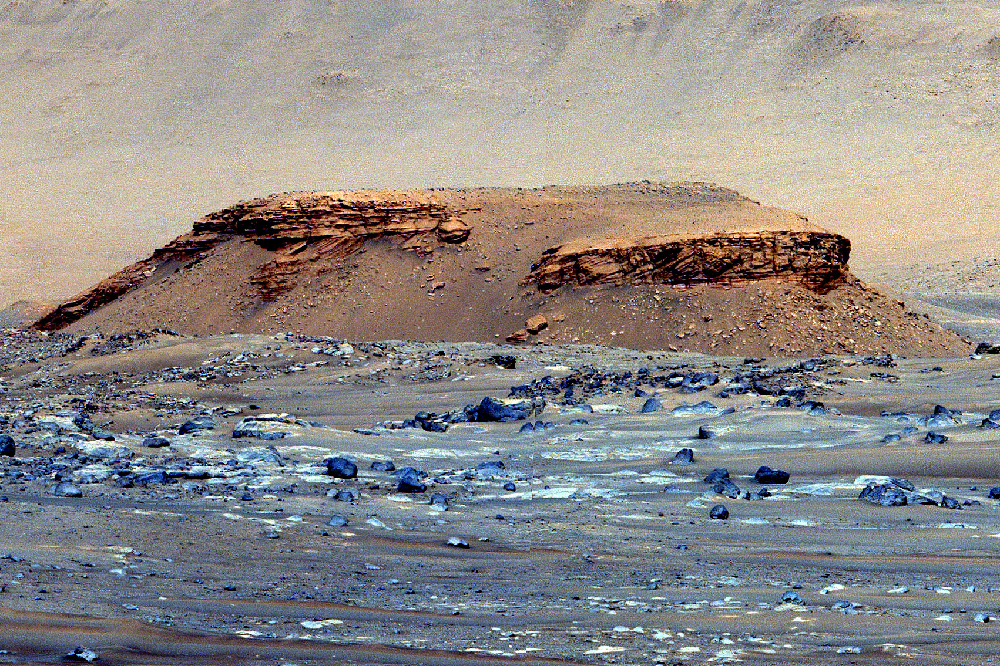
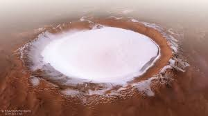

Exploring the evidence, implications, and future of water on the Red Planet
Discover the fascinating scientific discoveries about water on Mars and what they reveal about the planet's history

Massive underground water ice deposits have been found on Mars, especially near its poles. These icy layers offer valuable clues about the planet’s past climate and geology. The polar ice caps hold vast amounts of frozen water, preserved beneath the surface. If all this ice were melted, it could cover Mars in a global ocean around 5 meters deep. This discovery boosts hopes for future human missions by offering a potential water source. It also raises exciting possibilities about past or present microbial life on Mars.
The polar ice caps contain enough water ice that if melted, could cover the entire planet in an ocean about 5 meters deep.

Recurring Slope Lineae (RSL) are dark streaks that appear seasonally on Martian slopes. They emerge during warmer seasons when temperatures rise above -23°C, then fade in cooler months. These patterns hint at the possible presence of briny liquid water flowing briefly. Although the exact cause is still under investigation, water activity is a leading theory. Their discovery is crucial for understanding Mars' current climate and potential habitability. RSL could also help identify future landing sites for missions searching for life.
While the exact mechanism is still debated, these features suggest that liquid water might still flow on Mars today, albeit in limited amounts.

Evidence shows that Mars may have once hosted vast oceans, especially in its northern hemisphere. Ancient shoreline-like formations and water-altered minerals back this theory. These findings suggest a significantly wetter and possibly habitable past. Around 4.3 billion years ago, Mars had enough water to form a global ocean 137 meters deep. This ancient water may have supported early microbial life, if it ever existed. Understanding this helps scientists trace Mars' climate evolution and its lost atmosphere.
Scientists estimate that about 4.3 billion years ago, Mars had enough water to cover its entire surface in a layer about 137 meters deep.
The missions and technology helping us uncover the secrets of Martian water
The Curiosity and Perseverance rovers have been instrumental in searching for water on Mars. Curiosity discovered evidence of ancient freshwater lakes, while Perseverance is searching for signs of ancient microbial life in Jezero Crater, a former lakebed.
These rovers analyze soil and rock samples to detect water-related minerals and chemical signatures.
The European Space Agency's ExoMars program, in collaboration with Roscosmos, aims to search for signs of past or present life on Mars. The Trace Gas Orbiter is mapping sources of methane and water vapor in the atmosphere, while the upcoming Rosalind Franklin rover will drill up to 2 meters below the surface to search for organic molecules.
Upcoming missions like NASA's Mars Ice Mapper (planned for late 2020s) will specifically target water ice deposits to help plan for future human exploration. The Japanese Aerospace Exploration Agency (JAXA) is planning the Martian Moons Exploration (MMX) mission to study Phobos and Deimos, which may contain water ice.

Exploring Gale Crater since 2012, discovering evidence of ancient freshwater lakes

Searching for signs of ancient life in Jezero Crater, collecting samples for future return to Earth

Mapping atmospheric gases including water vapor since 2016

Future mission to identify accessible water ice deposits (planned for late 2020s)
What the presence of water means for Mars exploration and the search for life
Where there's water, there's potential for life—a key idea that drives the exploration of Mars. The presence of ancient rivers, underground ice, and possible seasonal briny flows increases the likelihood that life may have once existed—or might still exist—on the Red Planet. Microbial life could potentially survive in subsurface reservoirs or thin layers of seasonal liquid water. The discovery of complex organic molecules by the Curiosity rover supports the idea that Mars once had the ingredients needed for life. Upcoming missions, like the Mars Sample Return and the Rosalind Franklin rover, aim to search for biosignatures in areas once rich in water, such as ancient lakebeds and hot springs. Finding even the smallest traces of life would revolutionize our understanding of biology and life in the universe.
Water is one of the most critical resources for sustaining human life, making its availability a cornerstone for any long-term colonization of Mars. The discovery of subsurface water ice in various regions—particularly near the poles and in mid-latitudes—has sparked optimism about the feasibility of establishing permanent human habitats. This ice could be harvested to supply drinking water, support agricultural systems for food production, and be electrolyzed into oxygen for breathable air and hydrogen for rocket fuel, enabling return missions or travel between Martian settlements. Yet, the road to utilizing this water is complex. Much of the ice is buried beneath layers of regolith and is often contaminated with perchlorates—salts that are toxic to humans and would need to be filtered out before the water is safe to use. Additionally, Mars’ thin atmosphere and frigid temperatures make it difficult to store or use liquid water at the surface without specialized infrastructure. Efficient extraction and purification technologies will be essential, potentially involving robotic mining systems and advanced life-support integration. Site selection for future colonies is heavily influenced by proximity to water resources, with regions like the northern plains (e.g., Arcadia Planitia) and glacial deposits in mid-latitudes offering promising locations. These areas not only contain accessible ice but also offer relatively stable terrain and favorable solar energy conditions. Establishing bases in such zones could allow astronauts to conduct scientific research, build infrastructure, and develop sustainable living systems. As international space agencies and private companies like NASA and SpaceX accelerate plans for crewed missions to Mars, understanding and utilizing Martian water will be a defining factor in turning the Red Planet from a distant dream into a second home for humanity.
The study of water on Mars has profound implications for astrobiology—the quest to understand life beyond Earth. Mars, with its ancient river valleys, ice caps, and potential underground brines, presents a unique opportunity to explore whether life could have emerged independently in a world so different from our own. If even the simplest life once existed on Mars, it would suggest that the origin of life is not a rare cosmic event, but a natural process that may occur wherever the right conditions exist. Mars acts as a natural laboratory, helping scientists define the environmental boundaries in which life can thrive. Harsh surface radiation, extreme cold, and limited liquid water mirror the types of challenges organisms might face on distant exoplanets. Studying how Martian geology has been influenced by water helps researchers refine techniques for detecting biosignatures—indicators of past or present life. Moreover, robotic missions and future human exploration of Mars could uncover subsurface niches where microbial life might persist even today. Any discovery of Martian life—whether extinct fossils or active microbial colonies—would be one of the most significant scientific breakthroughs in history. It would expand biology beyond Earth-based life and reshape our understanding of life's diversity, adaptability, and universality. Ultimately, Mars may hold the key to answering one of humanity’s oldest questions: Are we alone in the universe?
Explore the compelling visual evidence of water on Mars
These steep Martian cliffs reveal vast ice deposits just beneath the surface, exposed by erosion and landslides. The visible layers of ice interbedded with dust suggest Mars has undergone repeated climate cycles over millions of years. These layers act like a natural archive, recording changes in the planet’s tilt, atmosphere, and weather patterns. Studying them helps scientists understand Mars’ climate history and how water has moved across its surface. The proximity of this ice to the surface also makes it a valuable resource for future human missions. Such regions may serve as ideal sites for research stations or even long-term settlements on Mars.

Jezero Crater is a 45-kilometer-wide impact basin on Mars that once hosted a lake fed by an ancient river. The crater features a well-preserved delta, formed as sediments were deposited where the river met the lake billions of years ago. This makes it one of the most promising sites to search for signs of past life. NASA’s Perseverance rover is currently exploring this region, collecting rock samples and analyzing the environment. The layered delta holds clues about Mars’ watery past and potential habitability. These samples are expected to be returned to Earth by future missions for detailed study.

This image displays polygonal patterns on the Martian surface, created by the seasonal freezing and thawing of ground ice. These formations are strikingly similar to those found in Earth's Arctic and permafrost regions. The presence of such polygons is strong evidence for subsurface ice, particularly in Mars' mid- to high-latitudes. As temperatures fluctuate, the expansion and contraction of ice cause the ground to crack and shift, forming these distinctive shapes. Studying them helps scientists understand the distribution and behavior of Martian ice. This ground ice is also a key resource for future exploration and possible human habitation.
Share your thoughts and questions about water on Mars
Add Your Comment